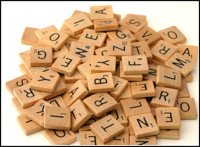

my_string <- "Hi, my name is Bond!"
my_string[1] "Hi, my name is Bond!"stringr to Work with StringsToday we will…
Follow along
Remember to download, save, and open up the handout for today!
stringr
lubridate
dplyr + stringr + ludridategit and GitHub
A string is a bunch of characters.
There is a difference between…
…a string (many characters, one object)…
and
…a character vector (vector of strings).
For the colleges dataset from PA 3:
a string is:
a character vector is:
stringrCommon tasks

Note
stringr package loads with tidyverse.str_xxx().string =stringr functions have a .data = argument!string = as an inputdplyr to work with a dataset!pattern =The pattern argument appears in many stringr functions.
Let’s talk more about what some of these symbols mean.
…are tricky!
We’re going to focus on:
str_subset()Returns a character vector containing a subset of the original character vector consisting of the elements where the pattern was found anywhere in the element.
There is a set of characters that have a specific meaning when using regex.
stringr package does not read these as normal characters.. ^ $ \ | * + ? { } [ ] ( )
.This character can match any character.
\\To match literally one of those special characters on the previous slide you need to “escape” it with \\
Use \\ to escape the . – it is now read as a normal character.
[1] "J. F. Drake State Community and Technical College"
[2] "John F. Kennedy University"
[3] "Pinellas Technical College-St. Petersburg"
[4] "St. Thomas University"
[5] "First Institute of Travel Inc."
[6] "St. John's College-Department of Nursing" ^ $[][] is treated like “or”[^ ] – specifies characters not to match on
[][ - ] – specifies a range of characters.
+ *{}()() creates a group of characters to be matched exactly|.str_detect()Returns a logical vector indicating whether the pattern was found in each element of the supplied vector.
filter().summarise() + sum (to get total matches) or mean (to get proportion of matches).str_detect() with filter()Which colleges in the dataset have “Polytechnic” in their name?
str_replace()Replace the first matched pattern in each string.
Related Function
str_replace_all() replaces all matched patterns in each string.
str_replace() with mutate()str_remove()Remove the first matched pattern in each string.
Related Functions
This is a special case of str_replace(x, pattern, replacement = "").
str_remove_all() removes all matched patterns in each string.
str_length()returns number of elements (characters) of a string
# A tibble: 6 × 2
INSTNM name_length
<chr> <int>
1 Alabama A & M University 24
2 University of Alabama at Birmingham 35
3 Amridge University 18
4 University of Alabama in Huntsville 35
5 Alabama State University 24
6 The University of Alabama 25shorten or lengthen a string to a specified length
str_extract()Returns a character vector with either NA or the pattern, depending on if the pattern was found.
Warning
str_extract() only returns the first pattern match.
Convert letters in a string to a specific capitalization format.
str_c()join multiple strings into a single character vector
Note
Similar to paste() and paste0() but with more precision.
stringr cheatsheet!!!str_xxx functions need the first argument to be a vector of strings, not a dataset!In this activity, you will use functions from the stringr package and regex to decode a message.

During your collaboration, your group will alternate between three roles:
Starting Roles Today
The person whose hometown is closest to SLO starts as the project manager, second as the computer.
str_match()Returns a character matrix containing either NA or the pattern, depending on if the pattern was found.
str_locate()Returns a dateframe with two numeric variables – the starting and ending location of the pattern. The values are NA if the pattern is not found.
Related Function
str_sub() extracts values based on a starting and ending location.
str_glue()Use variables in the environment to create a string based on {expressions}.
My name is Bond, James BondTip
For more details, I would recommend looking up the glue R package!
str_extract?Suppose we had a slightly different vector…
Note
For each of these functions, write down:
What regular expressions would match words that…
I want to join two datasets that have a county variable:
Practice
What stringr function will help me join the county_pop and county_loc by county?
What if I want to pull out only the area code in a phone number?
Practice
You will need a stringr function and to use regular expressions!
What if I want just the numbers in the area code?
| awards |
|---|
| Beyonce: 35G, 0A, 0E |
| Kendrick Lamar: 22G, 0A, 1E |
| Charli XCX: 2G, 0A, 0E |
| Cynthia Erivo: 1G, 0A, 1E |
| Viola Davis: 1G, 1A, 1E |
| Elton John: 6G, 2A, 1E |
That’s annoying…
Create a variable with just the artist name and a variable with the number of Grammys won.